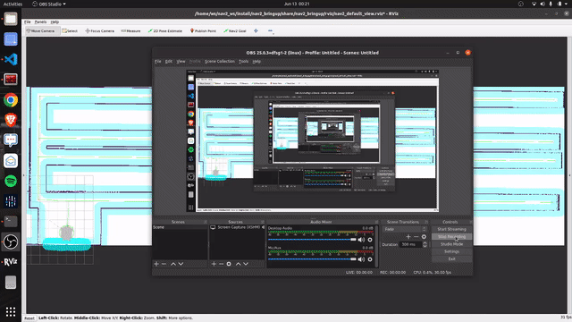
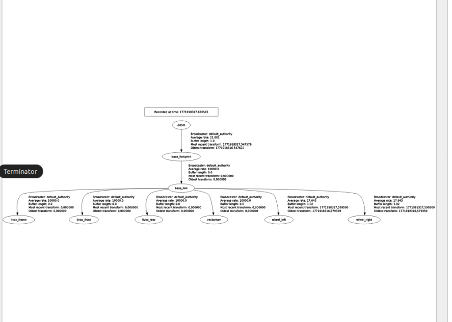
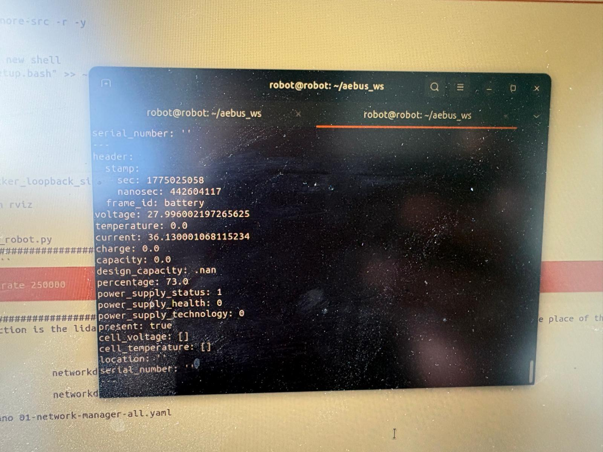

I'm Anirban Bhattacharyya — sole software owner of a full ROS 2 autonomy stack for an agricultural autonomous mobile robot. I take robots from raw LiDAR and CAN bus to localizing, planning, and navigating in the real world.

I'm a robotics software engineer focused on navigation and autonomy. On my current platform I own the entire software side: localization, mapping, motion planning, control, and the low-level bus that talks to the hardware.
That means I live across the whole stack — tuning AMCL and EKF sensor fusion so a robot knows where it is, configuring Nav2 so it plans paths that don't clip corridors, and dropping down to SocketCAN / CANopen when the motor controllers misbehave. I prefer fixing the root cause over papering it with parameters.
I hold an M.Sc in Advanced Mechatronics and work comfortably from embedded firmware (UART, SPI, I2C, GPIO) up to behavior trees and Dockerized deployment. Currently exploring roles across Europe and the UAE.
Each block below is a problem I've owned on a real robot in the field — not a tutorial.
Diagnosed AMCL using only ~2% of available scan beams, fused wheel odometry and IMU through an EKF, and injected fixed initial poses at launch for repeatable startup.
Resolved failures where the robot's footprint diagonal exceeded corridor width — corrected inflation radius, footprint, and goal-tolerance configs across full Nav2 param rewrites.
Fixed point-cloud mirroring from double-applied transforms, repaired slam_toolbox scan matching, and resolved QoS mismatches between perception and Nav2 nodes.
Built the SocketCAN / CANopen bridge, calibrated odometry against commanded motion, and tuned velocity-controller gains on ODrive Pro controllers.
France · robotics, control systems, and embedded engineering.
The robot running for real — navigation, perception, and the hardware underneath.

